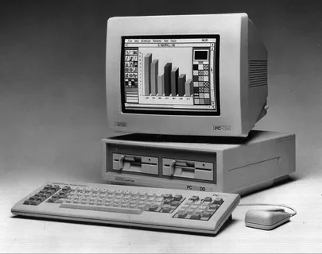

Введение
Анализ данных — это процесс обработки, визуализации и интерпретации данных для принятия обоснованных решений. Аналитики данных работают с большими объемами информации и помогают компаниям находить закономерности и тренды.
Специалисты в этой области применяют статистику, программирование и бизнес-аналитику для решения прикладных задач в маркетинге, финансах, логистике и других сферах.
Что делает аналитик данных?
Он собирает, очищает и анализирует данные, а также визуализирует результаты в виде отчетов или интерактивных панелей. Работа включает тесное взаимодействие с командами разработки, маркетинга и менеджмента.
История анализа данных
Анализ данных зародился вместе с развитием вычислительной техники. В XXI веке, с ростом объёмов информации, профессия аналитика стала одной из самых востребованных.
- 1960-е: Статистический анализ в научных исследованиях
- 2000-е: Расцвет BI-систем (Business Intelligence)
- 2020+: Big Data, машинное обучение и автоматизация анализа
Эволюция подходов к данным
От таблиц Excel до мощных платформ визуализации и аналитики — путь развития был стремительным. Сегодня аналитики используют Python, SQL, Power BI и другие современные инструменты.
Инструменты аналитика
В повседневной работе аналитики применяют множество инструментов:
- Python: библиотеки Pandas, NumPy, Matplotlib
- SQL: для работы с базами данных
- Power BI / Tableau: визуализация и дашборды
Как выбрать инструменты?
Начинать лучше с SQL и Excel, затем переходить к Python и BI-системам. Выбор зависит от задач и направления: продуктовая аналитика, финансы, e-commerce и т.д.
Типы анализа данных
Существует несколько основных подходов:
- Описательный анализ (что произошло?)
- Диагностический анализ (почему это произошло?)
- Предсказательный анализ (что произойдёт?)
- Предписывающий анализ (что нам делать?)
Применение на практике
Например, в e-commerce описательный анализ покажет уровень продаж, а предсказательный поможет спрогнозировать спрос на следующий месяц.
Работа с базами данных
Знание SQL — обязательный навык аналитика. Чаще всего используется:
- PostgreSQL
- MySQL
- Google BigQuery
Как организовать работу с данными?
Данные извлекаются из хранилищ с помощью SQL-запросов, очищаются в Python и визуализируются в BI-системах. Важно понимать структуру данных и бизнес-контекст.
Курсы
Основы анализа данных

Python для анализа данных
Научитесь работать с Pandas, Matplotlib и анализировать данные.
Записаться